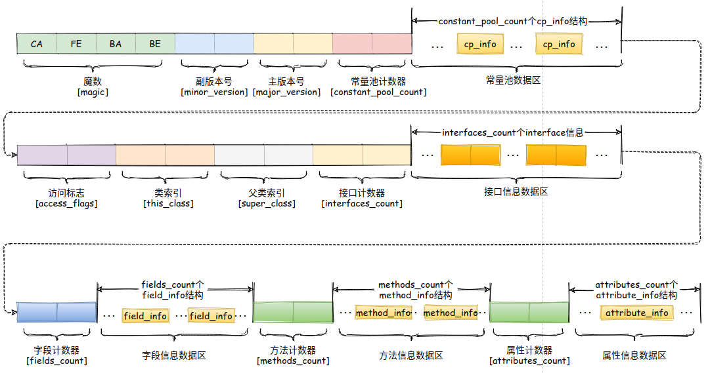

1 类文件结构
1.1 Java跨平台的基础
各种不同平台的虚拟机与所有平台都统一使用的程序存储格式——字节码（ByteCode）是构成平台无关性的基石，也是语言无关性的基础。Java虚拟机不和包括Java在内的任何语言绑定，它只与“Class文件”这种特定的二进制文件格式所关联，Class文件中包含了Java虚拟机指令集和符号表以及若干其他辅助信息。
1.2 Class类的本质
任何一个Class文件都对应着唯一一个类或接口的定义信息，但反过来说，Class文件实际上并不一定以磁盘文件的形式存在。Class文件是一个以8位字节为基础的二进制流。
1.3 Class文件格式
各个数据项目严格按照顺序紧凑地排列在Class文件之中，中间没有添加任何分隔符，这使得整个Class文件中存储的内容几乎全部都是程序运行的必要数据，没有空隙存在。
Class文件格式采用一种类似于c语言结构体的伪结构类存储数据，这种伪结构中只有两种数据类型：无符号数和表。
- 无符号数属于基本的数据类型，以u1、u2、u4、u8来分别代表1个字节、2个字节、4个字节和8个字节的无符号数，无符号数可以用来描述数字、索引引用、数量值或者按照UTF-8编码构成字符串值。
- 表是由多个无符号数或者其他表作为数据项构成的复合数据类型，所有表都习惯性地以
_info结尾。表用于描述有层次关系的复合结构的数据，整个Class文件本质上就是一张表。ClassFile { u4 magic; //Class 文件的标志 u2 minor_version;//Class 的小版本号 u2 major_version;//Class 的大版本号 u2 constant_pool_count;//常量池的数量 cp_info constant_pool[constant_pool_count-1];//常量池 u2 access_flags;//Class 的访问标记 u2 this_class;//当前类 u2 super_class;//父类 u2 interfaces_count;//接口数量 u2 interfaces[interfaces_count];//一个类可以实现多个接口 u2 fields_count;//Class 文件的字段属性数量 field_info fields[fields_count];//一个类会可以有个字段 u2 methods_count;//Class 文件的方法数量 method_info methods[methods_count];//一个类可以有个多个方法 u2 attributes_count;//此类的属性表中的属性数 attribute_info attributes[attributes_count];//属性表集合 }
Class文件字节码结构组织示意图

Class文件格式详解
魔数
每个Class文件的头4个字节称为魔数（Magic Number），它的唯一作用是确定这个文件是否为一个能被虚拟机接受的Class文件。使用魔数而不是扩展名来进行识别主要是基于安全方面的考虑，因为文件扩展名可以随意地改动。文件格式的制定者可以自由地选择魔数值，只要这个魔数值还没有被广泛采用过同时又不会引起混淆即可。Class文件版本
Class 文件的版本号,保证编译正常执行。Java的版本号是从45开始的，JDK 1.1之后的每个JDK大版本发布主版本号向上加1高版本的JDK能向下兼容以前版本的Class文件，但不能运行以后版本的Class文件，即使文件格式并未发生任何变化，虚拟机也必须拒绝执行超过其版本号的Class文件。常量池
常量池中常量的数量是不固定的，所以在常量池的入口需要放置一项u2类型的数据，代表常量池容量计数值（constant_pool_count）。与Java中语言习惯不一样的是，这个容量计数是从1而不是0开始的。
常量池中主要存放两大类常量：字面量（Literal）和符号引用（Symbolic References）。
字面量比较接近于Java语言层面的常量概念，如文本字符串、声明为final的常量值等。
而符号引用则属于编译原理方面的概念，包括了下面三类常量：类和接口的全限定名（Fully Qualified Name）、字段的名称和描述符（Descriptor）、方法的名称和描述符。访问标志
用于识别一些类或者接口层次的访问信息，包括：这个Class是类还是接口；是否定义为public类型；是否定义为abstract类型；如果是类的话，是否被声明为final等。类索引
类索引用于确定这个类的全限定名父类索引
父类索引用于确定这个类的父类的全限定名。由于Java语言不允许多重继承，所以父类索引只有一个，除了java.lang.Object之外，所有的Java类都有父类，因此除了java.lang.Object外，所有Java类的父类索引都不为0。接口索引集合
接口索引集合就用来描述这个类实现了哪些接口，这些被实现的接口将按implements语句（如果这个类本身是一个接口，则应当是extends语句）后的接口顺序从左到右排列在接口索引集合中。字段表集合
描述接口或者类中声明的变量。字段（field）包括类级变量以及实例级变量。而字段叫什么名字、字段被定义为什么数据类型，这些都是无法固定的，只能引用常量池中的常量来描述。字段表集合中不会列出从超类或者父接口中继承而来的字段，但有可能列出原本Java代码之中不存在的字段，譬如在内部类中为了保持对外部类的访问性，会自动添加指向外部类实例的字段。类级变量：静态变量，static修饰
实例级变量：成员变量方法表集合
描述了方法的定义，但是方法里的Java代码，经过编译器编译成字节码指令后，存放在属性表集合中的方法属性表集合中一个名为“Code”的属性里面。与字段表集合相类似的，如果父类方法在子类中没有被重写（Override），方法表集合中就不会出现来自父类的方法信息。但同样的，有可能会出现由编译器自动添加的方法，最典型的便是类构造器<clinit>方法和实例构造器<init>属性表集合
存储Class文件、字段表、方法表都自己的属性表集合，以用于描述某些场景专有的信息。如方法的代码就存储在Code属性表中。
2 字节码指令
Java虚拟机的指令由一个字节长度的、代表着某种特定操作含义的数字（称为操作码，Opcode）以及跟随其后的零至多个代表此操作所需参数（称为操作数，Operands）而构成。由于限制了Java虚拟机操作码的长度为一个字节（即0～255），这意味着指令集的操作码总数不可能超过256条。
tips:
大多数的指令都包含了其操作所对应的数据类型信息。例如：iload指令用于从局部变量表中加载int型的数据到操作数栈中，而fload指令加载的则是float类型的数据。
大部分的指令都没有支持整数类型byte、char和short，甚至没有任何指令支持boolean类型。大多数对于boolean、byte、short和char类型数据的操作，实际上都是使用相应的int类型作为运算类型。
2.1 加载和存储指令
用于将数据在栈帧中的局部变量表和操作数栈之间来回传输，这类指令包括如下内容。
| 作用 | 指令 |
|---|---|
| 将一个局部变量加载到操作栈 | iload、iload_<n>、lload、lload_<n>、fload、fload_<n>、dload、dload_<n>、aload、aload_<n> |
| 将一个数值从操作数栈存储到局部变量表 | istore、store_<n>、lstore、lstore_<n>、fstore、fstore_<n>、dstore、dstore_<n>、astore、astore_<n> |
| 将一个常量加载到操作数栈 | bipush、sipush、ldc、ldc_w、ldc2_w、aconst_null、iconst_m1、iconst_<i>、lconst_<l>、fconst_<f>、dconst_<d> |
| 扩充局部变量表的访问索引的指令 | wide |
2.2 运算或算术指令
用于对两个操作数栈上的值进行某种特定运算，并把结果重新存入到操作栈顶。
| 作用 | 指令 |
|---|---|
| 加法指令 | iadd、ladd、fadd、dadd |
| 减法指令 | isub、lsub、fsub、dsub |
| 乘法指令 | imul、lmul、fmul、dmul |
2.3 类型转换指令
可以将两种不同的数值类型进行相互转换。
Java虚拟机直接支持以下数值类型的宽化类型转换（即小范围类型向大范围类型的安全转换）：
- int类型到long、float或者double类型
- long类型到float、double类型
- float类型到double类型
处理窄化类型转换（Narrowing Numeric Conversions）时，必须显式地使用转换指令来完成。这些转换指令包括：i2b、i2c、i2s、l2i、f2i、f2l、d2i、d2l和d2f。
2.4 创建类实例和数组的指令
| 作用 | 指令 |
|---|---|
| 创建类实例 | new |
| 创建数组 | newarray、anewarray、multianewarray |
2.5 访问字段指令
getfield、putfield、getstatic、putstatic
2.6 数组存取相关指令
| 作用 | 指令 |
|---|---|
| 把一个数组元素加载到操作数栈的指令 | baload、caload、saload、iaload、laload、faload、daload、aaload |
| 将一个操作数栈的值存储到数组元素中的指令 | bastore、castore、sastore、iastore、fastore、dastore、aastore |
| 取数组长度的指令 | arraylength |
2.7 检查类实例类型的指令
instanceof、checkcast。
2.8 操作数栈管理指令
如同操作一个普通数据结构中的堆栈那样，Java虚拟机提供了一些用于直接操作操作数栈的指令。
| 作用 | 指令 |
|---|---|
| 将操作数栈的栈顶一个或两个元素出栈 | pop、pop2 |
| 复制栈顶一个或两个数值并将复制值或双份的复制值重新压入栈顶 | dup、dup2、dup_x1、dup2_x1、dup_x2、dup2_x2 |
| 将栈最顶端的两个数值互换 | swap |
2.9 控制转移指令
控制转移指令可以让Java虚拟机有条件或无条件地从指定的位置指令而不是控制转移指令的下一条指令继续执行程序，从概念模型上理解，可以认为控制转移指令就是在有条件或无条件地修改PC寄存器的值。
| 作用 | 指令 |
|---|---|
| 条件分支 | ifeq、iflt、ifle、ifne、ifgt、ifge、ifnull、ifnonnull、if_icmpeq、if_icmpne、if_icmplt、if_icmpgt、if_icmple、if_icmpge、if_acmpeq、if_acmpne |
| 复合条件分支 | tableswitch、lookupswitch |
| 无条件分支 | goto、goto_w、jsr、jsr_w、ret |
2.10 方法调用指令
| 指令 | 作用 |
|---|---|
invokevirtual |
指令用于调用对象的实例方法，根据对象的实际类型进行分派（虚方法分派），这也是Java语言中最常见的方法分派方式。 |
invokeinterface |
指令用于调用接口方法，它会在运行时搜索一个实现了这个接口方法的对象，找出适合的方法进行调用。 |
invokespecial |
指令用于调用一些需要特殊处理的实例方法，包括实例初始化方法、私有方法和父类方法。 |
invokestatic |
指令用于调用类方法（static方法）。 |
invokedynamic |
指令用于在运行时动态解析出调用点限定符所引用的方法，并执行该方法，前面4条调用指令的分派逻辑都固化在Java虚拟机内部，而invokedynamic指令的分派逻辑是由用户所设定的引导方法决定的。 |
tips: 方法调用指令与数据类型无关。
2.11 方法返回指令
是根据返回值的类型区分的，包括ireturn（当返回值是boolean、byte、char、short和int类型时使用）、lreturn、freturn、dreturn和areturn，另外还有一条return指令供声明为void的方法、实例初始化方法以及类和接口的类初始化方法使用。
2.12 异常处理指令
在Java程序中显式抛出异常的操作（throw语句）都由athrow指令来实现。
2.13 同步指令
有monitorenter和monitorexit两条指令来支持synchronized关键字的语义。
3 类加载机制
3.1 类加载过程
类从被加载到虚拟机内存中开始，到卸载出内存为止，它的整个生命周期包括：
- 加载（Loading）
- 验证（Verification）
- 准备（Preparation）
- 解析（Resolution）
- 初始化（initialization）
- 使用（Using）
- 卸载（Unloading）
其中验证、准备、解析这三个部分统称为连接（Linking）。
加载阶段
这一阶段虚拟机主要完成一下三件事情：- 通过一个类的全限定名来获取定义此类的二进制字节流。
- 将这个字节流所代表的静态存储结构转化为方法区的运行时数据结构。
- 在内存中生成一个代表这个类的
java.lang.Class对象，作为方法区这个类的各种数据的访问入口。一个非数组类的加载阶段（加载阶段获取类的二进制字节流的动作）是可控性最强的阶段，这一步我们可以去完成还可以自定义类加载器去控制字节流的获取方式（重写一个类加载器的
loadClass()方法）。数组类型不通过类加载器创建,它由Java虚拟机直接创建。
验证阶段
是连接阶段的第一步，这一阶段的目的是为了确保Class文件的字节流中包含的信息符合当前虚拟机的要求，并且不会危害虚拟机自身的安全。但从整体上看，验证阶段大致上会完成下面4个阶段的检验动作：文件格式验证、元数据验证、字节码验证、符号引用验证。准备阶段
是正式为类变量分配内存并设置类变量初始值的阶段，这些变量所使用的内存都将在方法区中进行分配。这个阶段中有两个容易产生混淆的概念需要强调一下，首先，这时候进行内存分配的仅包括类变量（被static修饰的变量），而不包括实例变量，实例变量将会在对象实例化时随着对象一起分配在Java堆中。其次，这里所说的初始值“通常情况”下是数据类型的零值，假设一个类变量的定义为：public static int value=123；那变量value在准备阶段过后的初始值为0而不是123，因为这时候尚未开始执行任何Java方法，而把value赋值为123的putstatic指令是程序被编译后，存放于类构造器<clinit>()方法之中，所以把value赋值为123的动作将在初始化阶段才会执行。假设上面类变量value的定义变为：public static final int value=123；编译时javac将会为value生成ConstantValue属性，在准备阶段虚拟机就会根据ConstantValue的设置将value赋值为123。解析阶段
是虚拟机将常量池内的符号引用替换为直接引用的过程。初始化阶段
是类加载过程的最后一步，前面的类加载过程中，除了在加载阶段用户应用程序可以通过自定义类加载器参与之外，其余动作完全由虚拟机主导和控制。到了初始化阶段，才真正开始执行类中定义的Java程序代码在准备阶段，变量已经赋过一次系统要求的初始值，而在初始化阶段，则根据程序员通过程序制定的主观计划去初始化类变量和其他资源，或者可以从另外一个角度来表达：初始化阶段是执行类构造器<clinit>()方法的过程。<clinit>()方法是由编译器自动收集类中的所有类变量的赋值动作和静态语句块（static{}块）中的语句合并产生的，编译器收集的顺序是由语句在源文件中出现的顺序所决定的。<clinit>()方法对于类或接口来说并不是必需的，如果一个类中没有静态语句块，也没有对类变量的赋值操作，那么编译器可以不为这个类生成<clinit>()方法。
虚拟机会保证一个类的<clinit>()方法在多线程环境中被正确地加锁、同步，如果多个线程同时去初始化一个类，那么只会有一个线程去执行这个类的<clinit>()方法，其他线程都需要阻塞等待，直到活动线程执行<clinit>()方法完毕。如果在一个类的<clinit>()方法中有耗时很长的操作，就可能造成多个进程阻塞。
在初始化阶段，虚拟机规范则是严格规定了有且只有5种情况必须立即对类进行
初始化（而加载、验证、准备自然需要在此之前开始）：
- 遇到
new,getstatic,putstatic,invokestatic这四种字节码指令时，如果类没有进行过初始化，则需要先触发其初始化。生成四条指令的最常见的Java代码场景是：
- 使用new关键字实例化对象的时候
- 读取或设置一个类的静态字段（被final修饰、已在编译期把结果放入常量池的静态字段除外）
- 调用一个类的静态方法
- 使用
java.lang.reflect包的方法对类进行反射调用的时候，如果类没有进行过初始化，则需要先触发其初始化。- 当初始化一个类的时候，如果发现其父类还没有进行过初始化，则需要先触发其父类的初始化。
- 当虚拟机启动时，用户需要指定一个要执行的主类（包含
main()方法的那个类），虚拟机会先初始化这个主类。- 当使用JDK 1.7的动态语言支持时，如果一个
java.lang.invoke.MethodHandle实例最后的解析结果REF_getStatic、REF_putStatic、REF_invokeStatic的方法句柄，并且这个方法句柄所对应的类没有进行过初始化，则需要先触发其初始化。Tips: 对于静态字段，只有直接定义这个字段的类才会被初始化，因此通过其子类来引用父类中定义的静态字段，只会触发父类的初始化而不会触发子类的初始化。对于常量（static final修饰），其实在编译阶段通过常量传播优化，已经将此常量的值存储到了
NotInitialization类的常量池中，以后NotInitialization对常量ConstClass.HELLO_WORLD的引用实际都被转化为NotInitialization类对自身常量池的引用了。也就是说，实际上NotInitialization的Class文件之中并没有ConstClass类的符号引用入口，这两个类在编译成Class之后就不存在任何联系了。
3.2 类加载器
3.2.1 自定义类加载器
对于任意一个类，都需要由加载它的类加载器和这个类本身一同确立其在Java虚拟机中的唯一性，每一个类加载器，都拥有一个独立的类名称空间。这句话可以表达得更通俗一些：比较两个类是否“相等”，只有在这两个类是由同一个类加载器加载的前提下才有意义，否则，即使这两个类来源于同一个Class文件，被同一个虚拟机加载，只要加载它们的类加载器不同，那这两个类就必定不相等。
这里所指的“相等”，包括代表类的Class对象的equals()方法、isAssignableFrom()方法、isInstance()方法的返回结果，也包括使用instanceof关键字做对象所属关系判定等情况。
在自定义ClassLoader的子类时候，我们常见的会有两种做法。
- 一种是重写
loadClass()方法。 - 另一种是重写
findClass()方法。其实这两种方法本质上差不多，毕竟
loadClass()也会调用findClass()，但是从逻辑上讲我们最好不要直接修改loadClass()的内部逻辑。我建议的做法是只在findClass()里重写自定义类的加载方法。loadClass()这个方法是实现双亲委托模型逻辑的地方，擅自修改这个方法会导致模型被破坏，容易造成问题。因此我们最好是在双亲委托模型框架内进行小范围的改动，不破坏原有的稳定结构。同时，也避免了自己重写loadClass()方法的过程中必须写双亲委托的重复代码，从代码的复用性来看，不直接修改这个方法始终是比较好的选择。
3.2.2 系统的类加载器
从Java虚拟机的角度来讲，只存在两种不同的类加载器：一种是启动类加载器（Bootstrap ClassLoader），这个类加载器使用C++语言实现，是虚拟机自身的一部分；另一种就是所有其他的类加载器，这些类加载器都由Java语言实现，独立于虚拟机外部，并且全都继承自抽象类java.lang.ClassLoader。
| 加载器类型 | 描述 |
|---|---|
| 启动类加载器（Bootstrap ClassLoader） | 这个类将器负责将存放在<JAVA_HOME>\lib目录中的，或者被-Xbootclasspath参数所指定的路径中的，并且是虚拟机识别的（仅按照文件名识别，如rt.jar，名字不符合的类库即使放在lib目录中也不会被加载）类库加载到虚拟机内存中。启动类加载器无法被Java程序直接引用，用户在编写自定义类加载器时，如果需要把加载请求委派给引导类加载器，那直接使用null代替即可。 |
| 扩展类加载器（Extension ClassLoader） | 这个加载器由sun.misc.Launcher$ExtClassLoader实现，它负责加载<JAVA_HOME>\lib\ext目录中的，或者被java.ext.dirs系统变量所指定的路径中的所有类库，开发者可以直接使用扩展类加载器。 |
| 应用程序类加载器（Application ClassLoader） | 这个类加载器由sun.misc.Launcher$App-ClassLoade实现。由于这个类加载器是ClassLoader中的getSystemClassLoader()方法的返回值，所以一般也称它为系统类加载器。它负责加载用户类路径（ClassPath）上所指定的类库，开发者可以直接使用这个类加载器，如果应用程序中没有自定义过自己的类加载器，一般情况下这个就是程序中默认的类加载器。 |
3.2.3 双亲委派模型
双亲委派模型描述
每一个类都有一个对应它的类加载器。系统中的ClassLoader在协同工作的时候会默认使用双亲委派模型 。即在类加载的时候，系统会首先判断当前类是否被加载过。已经被加载的类会直接返回，否则才会尝试加载。加载的时候，首先会把该请求委派该父类加载器的loadClass()处理，因此所有的请求最终都应该传送到顶层的启动类加载器BootstrapClassLoader中。当父类加载器无法处理时，才由自己来处理。当父类加载器为null时，会使用启动类加载器BootstrapClassLoader作为父类加载器。
双亲委派模型要求除了顶层的启动类加载器外，其余的类加载器都应当有自己的父类加载器。这里类加载器之间的父子关系一般不会以继承（Inheritance）的关系来实现，而是都使用组合（Composition）关系来复用父加载器的代码。双亲委派模型实现源码分析
protected Class<?> loadClass(String name, boolean resolve) throws ClassNotFoundException { synchronized (getClassLoadingLock(name)) { // 首先检查请求的类是否已经被加载 Class<?> c = findLoadedClass(name); if (c == null) { //请求的类未被加载 long t0 = System.nanoTime(); try { if (parent != null) { // 调用父类加载器的loadClass方法加载 c = parent.loadClass(name, false); } else { // JVM规范明确的说明，只有启动类加载器的父类加载器为空。 // 这里调用启动类加载器BootstrapClassLoader加载 c = findBootstrapClassOrNull(name); } } catch (ClassNotFoundException e) { // ClassNotFoundException thrown if class not found // from the non-null parent class loader } if (c == null) { // 自己尝试加载 long t1 = System.nanoTime(); c = findClass(name); // this is the defining class loader; record the stats sun.misc.PerfCounter.getParentDelegationTime().addTime(t1 - t0); sun.misc.PerfCounter.getFindClassTime().addElapsedTimeFrom(t1); sun.misc.PerfCounter.getFindClasses().increment(); } } if (resolve) { resolveClass(c); } return c; } }双亲委派模型带来的好处
双亲委派模型保证了Java程序的稳定运行，可以避免类的重复加载（JVM 区分不同类的方式不仅仅根据类名，相同的类文件被不同的类加载器加载产生的是两个不同的类），也保证了 Java 的核心 API 不被篡改。如果不用没有使用双亲委派模型，而是每个类加载器加载自己的话就会出现一些问题，比如我们编写一个称为java.lang.Object类的话，那么程序运行的时候，系统就会出现多个不同的Object 类。破坏双亲委派模型
为了避免双亲委托机制，我们可以自己定义一个类加载器，然后重载loadClass()即可。